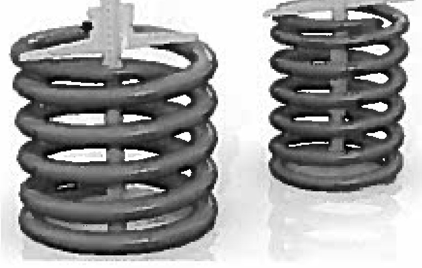
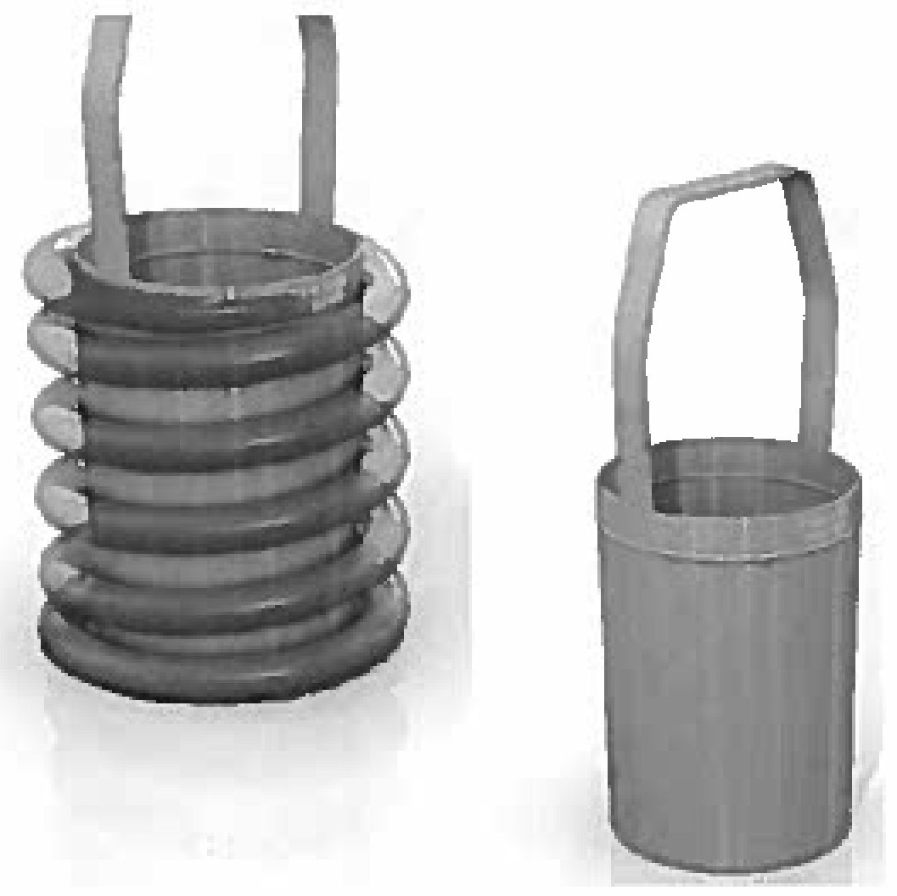
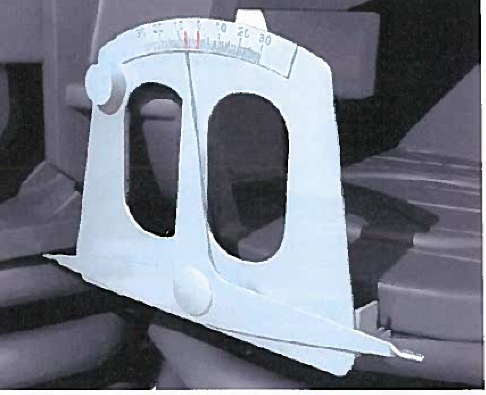

Ressor komplekti va friksion ponalar holati
5.4.1–5.4.4 va 5.5: prujina yuzasi, erkin holatdagi balandlik, kalibrlar, prutok diametri va ponalarning pasayishi/ko'tarilishi.
5.4.1 — Prujina yuzasining sifati
Nazorat kamida 4 karra kattalashtiruvchi lupa ЛП-1-4 ГОСТ 25706 bilan vizual bajariladi.
5.4.2 — Erkin holatdagi balandlik

O'lchash plita ГОСТ 10905 ustida, shtangenglubinomer ШГ–300–0,1 ГОСТ 162 bilan bajariladi.
| Prujina | Asbob qayerga qo'yiladi |
|---|---|
| Tashqi | Shtangenglubinomer prujinaning ICHIGA joylashtiriladi |
| Ichki | Shtangenglubinomer prujinaning MARKAZIGA joylashtiriladi |
Ikkala holatda ham ramka asosi ikkita uchi bilan prujinaning tayanch (torets) yuzasiga tayanishi shart, so'ngra shtanga plitaga tiraladi, gayka bilan aniq o'rnatiladi va stopor vintlar qotiriladi.
| Holat | Balandlik me'yori |
|---|---|
| Umumiy | 249 (+6 / −3) mm |
| 18-100, 18-101 — 1989 yildan 2012 yilgacha tayyorlangan | 249 (+7 / −2) mm |
| 18-100, 18-101 — 2012 yildan 2015 yilgacha tayyorlangan | 249 (+6 / −2) mm |
5.4.3 — Kalibrlar bilan geometriyani nazorat qilish

| Kalibr | Nimani tekshiradi |
|---|---|
| Т914.22.000 (stakan-probka) | Tashqi prujinalarning ichki diametri |
| Т914.23.000 (kalibr-stakan) | Ichki prujinalarning tashqi diametri |
5.4.4 — Prutok diametri
| Aravacha modeli | Prutok diametri (tashqi/ichki) |
|---|---|
| Umumiy | 29/20 mm |
| 18-9597 | 30/21 mm |
| 18-9770, 18-2128, 18-7055, 18-9801, 18-9918, 18-9922, 18-1750 | 29/20 yoki 30/21 mm ga ruxsat |
| 18-100, 18-101 — tashqi prujinalar, 2015 y.gacha | 30 mm |
| 18-100, 18-101 — ichki prujinalar, 1989 y.gacha | 19 mm |
| 18-100, 18-101 — ichki prujinalar, 1989–2015 y. | 21 mm |
5.5 — Friksion ponalar holati

Bu — butun aravacha yig'ilgandan keyingi yakuniy nazorat. Moslama Т914.18.000 nadressor balkasining tayanch yuzasiga o'rnatiladi va 100 mm radius bilan prujinaga tiraladi; koromislo o'lchov uchi bilan ponaning pastki yuzasiga olib boriladi va ko'rsatkich shkaladan o'qiladi. Ikkinchi pona ham xuddi shunday o'lchanadi.
| Ta'mir turi | Talab |
|---|---|
| Depo ta'miri (yig'ilib, vagon ostiga podkatka qilingandan keyin) | Hech bir ponaning KO'TARILISHI (завышение) ruxsat etilmaydi; pasayish (занижение) 12 mm dan ko'p emas |
| Kapital ta'mir | Bitta ressor osmasining ponalari 4,0 dan 12,0 mm gacha pasaytirilgan bo'lishi kerak |
Nazorat savollari
Avval o'zingiz javob bering, so'ngra tekshiring.
1. Prujinaning erkin holatdagi balandligi umumiy holda qancha bo'lishi kerak?
2. Komplektga prujinalarni tanlashda balandlik farqi qancha bo'lishi mumkin?
3. Kalibr prujinaga qanday kiritiladi?
4. Depo ta'mirida friksion ponaning ko'tarilishiga ruxsat beriladimi?
5. Kapital ta'mirda ponalar qanday holatda bo'lishi kerak?
Manba: РД 32 ЦВ 050-2020 — ГОСТ 9246-2013 bo'yicha tip 2 yuk vagon aravachalarini ta'mirlashda uzel va detallar parametrlarini o'lchash metodikasi.
Andijon vagon deposi · telejka ta'mirlash sexi.